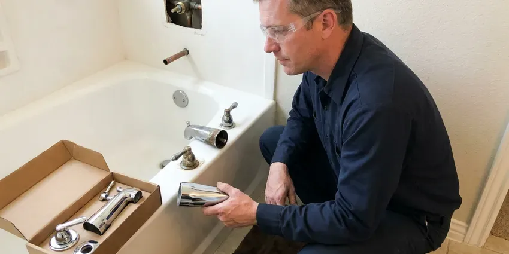

Toilet Replacement in Brattleboro, VT
When your old toilet is beyond repair, CKV Plumbing provides reliable toilet replacement services across Brattleboro, VT. We handle everything from removal to a proper new installation.
- Same-Day Toilet Replacement
- Guaranteed Work
- Licensed Plumbers
- Workmanship Guarantee
Professional Toilet Replacement in Brattleboro, VT.
Don't let an old, inefficient, or broken toilet cause you headaches. Our team is here to help.
Your Go-To for Toilet Replacement in Brattleboro, VT
CKV Plumbing specializes in efficient and dependable toilet replacement for homes across Brattleboro, VT. Whether your old toilet is always running, cracked, or simply outdated, our skilled plumbers can remove it and install a brand new unit.
Our expertise includes:
- Flange inspection, repair and replacement during every swap
- Precise installation of all toilet types.
- Removal and disposal of old toilets and tanks

Additional Bathroom Plumbing Services in Brattleboro, VT
From toilets to showers, our bathroom plumbing team in Brattleboro, VT handles repairs, installs, and upgrades with tidy, code-compliant work.


Customers
Why Choose CKV Plumbing for Toilet Replacement in Brattleboro, VT?
We use only durable materials and proven techniques for every toilet replacement. This commitment to excellence means a long-lasting, trouble-free fixture in your home.
- Transparent Pricing, You'll receive a clear, upfront estimate before any work begins, with no hidden fees.
- Expert Plumbers, Our licensed plumbers have extensive experience with toilet plumbing, from flange repairs to wax ring seals.
- One Visit, Removal, installation, testing and haul-away happen in a one trip.
Citywide Coverage
No matter where you are located in Brattleboro, VT, our experienced team is ready to provide timely and efficient toilet replacement. We understand the specific plumbing challenges that can come up in different parts of Brattleboro.
Experienced Team
Our plumbing team brings years of hands-on experience to every toilet replacement project. They are continuously trained on the latest toilet technologies and installation methods, making sure your new toilet works properly.
Safety-First Approach
We replace corroded angle stops and old supply tubes as part of the job when needed. Every new toilet is anchored, leveled and tested to satisfy plumbing code.
Trusted Certified Brattleboro Plumbing Services Professionals
At CKV Plumbing, we take pride in providing licensed, certified plumbing services throughout Brattleboro, VT. Backed by leading industry credentials, our experienced plumbers combine technical skill with genuine customer care. Whether it is repair, installation, or maintenance, we follow strict safety and quality standards to deliver long-lasting results you can trust.
Call Us Now PHCC Plumbing Contractor Recognition
PHCC Plumbing Contractor Recognition Better Business Bureau (BBB) Accreditation
Better Business Bureau (BBB) Accreditation Angi Certified Pro
Angi Certified Pro ISO 9001 Quality Management Certification
ISO 9001 Quality Management CertificationReliable Toilet Replacement Services in Brattleboro, VT
Cracked Bowl or Tank Replacement in Brattleboro
A cracked toilet bowl or tank can lead to slow leaks and water damage. CKV Plumbing provides targeted replacement for these specific components in Brattleboro, often a more cost-effective solution than a full toilet replacement if the base and internal mechanisms are still sound. We'll assess the damage, source a compatible replacement part, and install it securely, restoring your toilet's integrity without a complete overhaul.

Toilet Brands We Replace in Brattleboro
Our team at CKV Plumbing is familiar with replacing and installing toilets from all major manufacturers in Brattleboro. This includes well-known brands like Kohler, American Standard, Toto, Delta, and Gerber. We can help you choose a new toilet from these trusted names that matches your bathroom's style, fits your budget, and provides reliable performance for years to come.
Standard Toilet Replacement in Brattleboro
Many homes in Brattleboro have standard two-piece toilets that sooner or later need replacing due to age, cracks, or persistent clogs. Our service includes removing your old unit, inspecting the flange, and installing a new standard toilet, with a watertight seal. We work with common brands and models to find a suitable replacement for your bathroom.
Wall-Mounted Toilet Replacement in Brattleboro
For modern bathrooms or those seeking to maximize space, wall-mounted toilets offer a sleek design. Replacing these units requires specialized knowledge of in-wall carrier systems. Our team in Brattleboro has the expertise to carefully remove and install wall-mounted toilets, ensuring proper support, drainage, and water supply connections, keeping the look and function of your bathroom.
Toilet Rough-In Adjustments in Brattleboro, VT
Sometimes, replacing an old toilet with a new model may require minor adjustments to the rough-in dimensions. This involves making sure the drain pipe and water supply line align correctly with the new toilet's specifications. Our skilled plumbers in Brattleboro, VT can handle these adjustments, ensuring a proper fit and operation without extensive remodeling.
Replacing Pressure-Assisted Toilets in Brattleboro, VT
Pressure-assisted toilets, often found in commercial settings or homes needing extra flushing power, require specialized replacement expertise. CKV Plumbing is skilled in handling these more complex units in Brattleboro, VT. We make sure the intricate air charge and pressure tank system is correctly installed and calibrated for powerful, clog-free flushing, following all manufacturer guidelines for performance and longevity.
Cracked Toilet Replacement in Brattleboro
Cracks in the tank or bowl can leak slowly or fail all at once. A hairline crack below the waterline is not safely repairable, and epoxy fixes rarely last. We replace the cracked toilet promptly and check the floor for any water damage. If only the tank is cracked and the model is still made, we can sometimes replace the tank alone.

High-Efficiency Toilet (HET) Upgrades in Brattleboro, VT
Upgrade to a High-Efficiency Toilet (HET) with CKV Plumbing and start saving water in your Brattleboro, VT home. These models use significantly less water per flush, typically 1.28 gallons or less, compared to older 3.5 or 5-gallon models. We can help you select an HET that qualifies for potential rebates and provides strong flushing power, reducing your water bill and environmental impact without giving up performance.
Toilet Replacement Near Me in Brattleboro, VT
When you need a new toilet, you want a trusted local company. CKV Plumbing provides complete toilet replacement services across Brattleboro, making us the convenient choice for your home or business. We're dedicated to serving our community with integrity and skill.
For reliable toilet replacement near me in Brattleboro, VT, look no further than CKV Plumbing. Our local team is located to provide prompt service to all residential and commercial properties. A large share of Vermont homes rely on private wells, and well water here can range from soft to fairly hard depending on the bedrock.
CKV Plumbing at a Glance
- Licensed and insured plumbers serving Brattleboro, VT
- Same-day appointments and 24/7 emergency response
- Clear written estimates, no hidden fees
- 4.8-star rated by 553+ Vermont customers
Brattleboro Map
Brattleboro Information
- Population
- 7,352
- Area codes
- Local
- Service area
- Brattleboro and communities within 40 miles
- Nearby
- Bennington, Rutland, Middlebury, Barre
Replacing an old toilet in Brattleboro, VT with a WaterSense model is one of the simplest ways to cut household water use and reduce your monthly bill.
Expert Services
Trust our professionals for reliable CKV Plumbing solutions in Brattleboro, VT.
Our Specialized Plumbing Services in Brattleboro, VT
At CKV Plumbing, we provide a complete range of plumbing services across Brattleboro, VT. From leak detection to full system installations, our team ensures fast, precise, and affordable service for both residential and commercial properties. Explore our core services below:


How Our Toilet Replacement Process Works in Brattleboro, VT
Our toilet replacement process in Brattleboro, VT is designed to be simple and stress-free. We handle every step with professionalism and attention to detail.
Request a Quote
Call (802) 209-5139 and tell us about your current toilet and what you want in a new one. We quote a firm price including removal and disposal.
Remove and Inspect
We remove the old toilet and inspect the flange, subfloor and shutoff valve. Any needed repairs are explained and priced before we continue.
Install and Haul Away
We set your new toilet level on a fresh seal and test it carefully. Then we clean up and take the old toilet with us.
Frequently Asked Questions About Toilet Replacement in Brattleboro
Most toilet replacements, including a quality standard toilet, labor and disposal, cost $450 to $950. Premium one-piece or smart toilets can raise the total to $1,200 to $2,500. Flange repairs, if needed, usually add $100 to $250.
Older toilets can use 3.5 to 7 gallons per flush, while WaterSense toilets use 1.28 gallons or less. For a average household, that can mean thousands of gallons saved each year.
A like-for-like toilet replacement in the same location generally does not require a permit. If drains are moved or a new bathroom is added, a permit is usually required.
Yes. Removal and disposal of your old toilet and all packaging are part of our replacement price.
Manufacturers usually warranty parts for 1 to 5 years and porcelain longer. We guarantee our workmanship and will return if a leak is caused by the installation.
We often recommend and install reliable brands like American Standard, Kohler, Toto, and Delta. These brands offer a range of durable, water-efficient models that perform well across a wide range of water conditions and are known for their longevity.
CKV Plumbing provides a warranty on both our workmanship and the installed toilet fixture. The specific terms vary by toilet brand, but we stand behind our installations to ensure your peace of mind regarding leaks or malfunctions.
A standard toilet replacement usually takes our skilled plumbers about 1 to 3 hours to complete. This includes removing the old toilet, preparing the area, and installing the new unit, making sure it is properly sealed and functional.
What People Are Saying About Our Plumbing Experts?

Sofia M.
Two new toilets installed in one visit, no mess left behind, and the tech even adjusted a faucet he noticed was dripping. Fair pricing and really friendly.
Toilet Installation · Middlebury, VT
Mark T.
When our office needed drain cleaning, CKV Plumbing provided quick, reliable service. The plumber arrived on time and made sure every drain flowed perfectly before leaving. Very satisfied.
Drain Cleaning · Rutland, VT
James P.
Our commercial plumbing system had a leak under the sink, and CKV Plumbing handled it professionally. The plumbers arrived quickly and restored everything without disruption to our customers.
Commercial Plumbing · Brattleboro, VT
Patricia H.
We had a slab leak that two other companies could not find. CKV Plumbing located it in under an hour, explained our options, and the price matched the quote to the dollar.
Slab Leak Repair · Bennington, VT
Daniel K.
A pipe burst at 11 pm and they actually answered. The plumber showed up within the hour, shut everything down, and had us back to normal the next morning. Could not ask for more.
Emergency Plumbing · Brattleboro, VTRobert G.
The trenchless sewer replacement saved our front yard. They walked us through the camera inspection footage first so we knew exactly what we were paying for.
Sewer Line Replacement · Brattleboro, VT